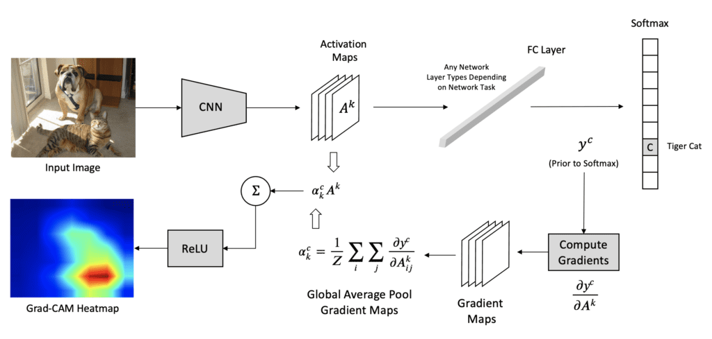

Full-form of GradCAM
Gradient-Weighted Class Activation Mapping
Working principle of GradCAM?

5 step process:
Step 1: Forward Pass - Pass the input (image/signal) through the CNN to get the feature maps from the last convolutional layer: \(A^k\) - Get raw outputs (logits) before softmax
Step 2: Select the Target Class - Choose the class c we want to explain (usually the predicted class with highest score) and calculate its score (logit i.e. output before softmax): \(y^c\)
Step 3: Compute the Gradients - Compute the gradient of the target class score \(y^c\) with respect to the feature maps \(A^k\) of the selected convolutional layer, i.e., \(\frac{\partial y^c}{\partial A^k}\)
- These gradients show how important each feature map is for the target class.
Step 4: Compute the Grad-CAM - For each filter k, global average pool the gradients spatially (over width i and height j) to get a single scalar weight \({a_k}^c\):
\(\alpha_k^c = \frac{1}{Z} \sum_{i} \sum_{j} \frac{\partial y^c}{\partial A_{ij}^k}\)
- \(\alpha_k^c\) is the importance weight for kth feature map in \(A^k\)
- Finally, to calculate the final Grad-CAM, multiply each feature map \(A^k\) by its corresponding importance weight \(\alpha_k^c\) and then sum.
- Apply a ReLU activation to keep only the parts that positively influence the target class. This makes the Grad-CAM map focus only on features that support the class, not those that suppress it.
\(L^c_{Grad-CAM} = ReLU (\sum_{k} \alpha_k^c A^k)\)
Step 5: Post-processing - Resize the Grad-CAM map to the same spatial size as the input
Why we used feature maps \(A^k\) from last convolutional layer?
Grad-CAM uses the feature maps from the last conv layer because it typically has the most high-level, semantically rich features but still retains some spatial information. Using earlier layers would provide too much low-level information (edges, textures) and not enough conceptual understanding.
Global Average Pooling?
It computes the average of all pixel values within each feature map, effectively collapsing each map into a single scalar value. This process reduces the number of parameters in the model, making it less prone to overfitting and more robust to spatial translations.
The global average pooling means that you have a 3D 8,8,10 tensor and compute the average over the 8,8 slices, you end up with a 3D tensor of shape 1,1,10 that you reshape into a 1D vector of shape 10. And then you add a softmax operator without any operation in between. The tensor before the average pooling is supposed to have as many channels as your model has classification categories.
global average pooling as implemented in SqueezeNet:
final_conv = nn.Conv2d(512, self.num_classes, kernel_size=1)
self.classifier = nn.Sequential(
nn.Dropout(p=0.5),
final_conv,
nn.ReLU(inplace=True),
nn.AvgPool2d(13)
)(512 is the number of channels in the feature maps feeding in to this layer, and 13 is the number of rows and columns in the feature maps going in to this layer. You’ll need to change these depending on your network structure.)
What is Adaptive Pooling?
- In average-pooling or max-pooling, you essentially set the stride and kernel-size by your own, setting them as hyper-parameters. You will have to re-configure them if you happen to change your input size.
In Adaptive Pooling on the other hand, we specify the output size instead. And the stride and kernel-size are automatically selected to adapt to the needs. The following equations are used to calculate the value in the source code.
Stride = (input_size//output_size)
Kernel size = input_size - (output_size-1)*stride
Padding = 0
(Not related to global average pooling as such but we can also use adaptive_avg_pool2d to achieve global average pooling, just set the output size to (1, 1),
import torch.nn.functional as F
x = F.adaptive_avg_pool2d(x, (1, 1)))
Other Approaches to XAI in Computer Vision
- Visualizing features learned in different layers
- GradCAM
- Guided Backpropagation
- DeepDream (Need to verify)
- Dimensionality Reduction & Feature Visualization (like PCA for last FC layers)
- Sensitivity Analysis: (how much each part of the input image is involved in the decision of network’s classifier. The algorithm blocks out different regions of an input image with a sliding gray square and then it runs these occluded images through the network and displays their probabilities for correct class using a heatmap)
- Saliency Map (General)
- Local Interpretable ModelAgnostic Explanations (LIME)
- SHapely Additive exPlanations (SHAP)
List of xAI works in Computer Vision
Reference: Paper
.. .. 
t-SNE vs PCA?
Ans: t-SNE for local structure; PCA for global. “In high-dimensional data, it is usually impossible to keep similar data-points close to each other using linear projections (like in PCA). Hence, non-linear methods (like t-SNE) are more suitable in such cases, as they can preserve the local structure of data very well.”
Why explainability?
Having appropriate answers to: - (i) Verification of the model; - (ii) Improving a model by understanding its failure points; - (iii) Extracting new insights and hidden laws of the model, and; - (iv) Identifying modules responsible for incorrect decisions.
Difference b/w VGG, ResNet, DenseNet, SqueezeNet, InceptionNet?
üî∑ 1. VGG (e.g., VGG16, VGG19)
Uniqueness: Very simple and deep architecture using only 3x3 convolutions and stacked layers.
Pros: Easy to implement and understand.
Cons: Large number of parameters (≈138M), leading to slow training and high memory usage.
Key Idea: Depth over architectural complexity.
üî∑ 2. ResNet (Residual Network)
Uniqueness: Introduces skip connections (residual connections) to allow gradient flow through very deep networks.
Pros: Enables training of networks with 100+ layers without vanishing gradient issues.
Cons: Slightly more complex architecture.
Key Idea: Learn residuals: F(x) + x instead of just F(x).
üî∑ 3. DenseNet (Densely Connected Network)
Uniqueness: Each layer receives input from all previous layers (dense connectivity).
Pros: Encourages feature reuse, fewer parameters than ResNet with similar performance.
Cons: High memory usage due to many connections.
Key Idea: Dense connectivity between layers: x_l = H([x_0, x_1, …, x_{l-1}]).
üî∑ 4. SqueezeNet
Uniqueness: Achieves AlexNet-level accuracy with 50x fewer parameters.
Pros: Very lightweight, ideal for edge devices or deployment in resource-constrained environments.
Cons: Slightly lower accuracy on large datasets.
Key Idea: Replace 3x3 filters with 1x1, use Fire modules (squeeze + expand).
üî∑ 5. InceptionNet (GoogLeNet and its variants)
Uniqueness: Uses Inception modules to capture multi-scale features (1x1, 3x3, 5x5 convolutions in parallel).
Pros: Efficient and computationally optimized, better utilization of model capacity.
Cons: More complex to design and tune.
Key Idea: Parallel filters with different sizes + dimensionality reduction via 1x1 convolutions.
Resources
- https://arxiv.org/pdf/2102.01792
- https://research.google/blog/inceptionism-going-deeper-into-neural-networks/
- https://cs.stanford.edu/people/karpathy/convnetjs/demo/cifar10.html
- https://cs.stanford.edu/people/karpathy/cnnembed/
- https://github.com/jacobgil/pytorch-grad-cam
- https://xai-tutorials.readthedocs.io/en/latest/_model_specific_xai/Grad-CAM.html